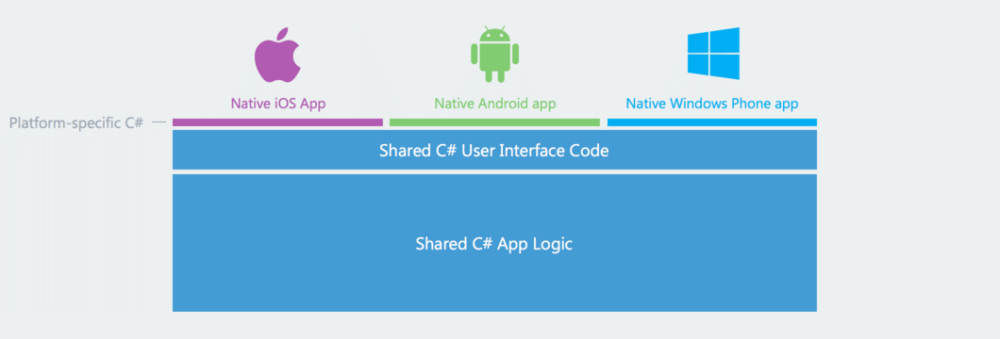
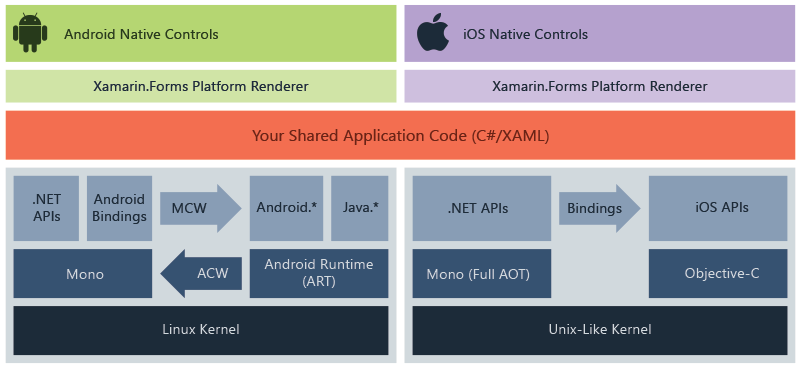
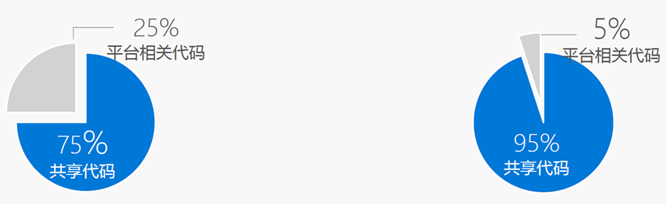
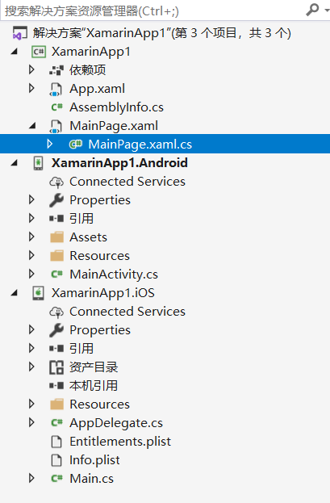
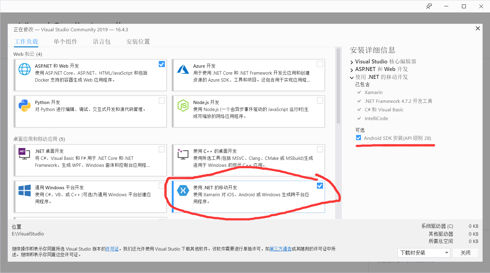
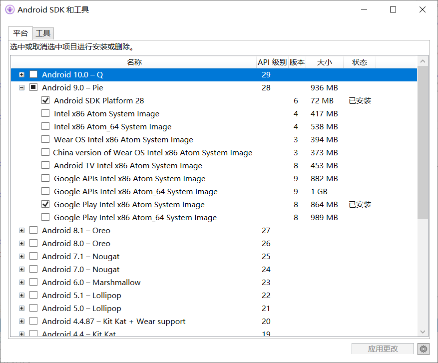
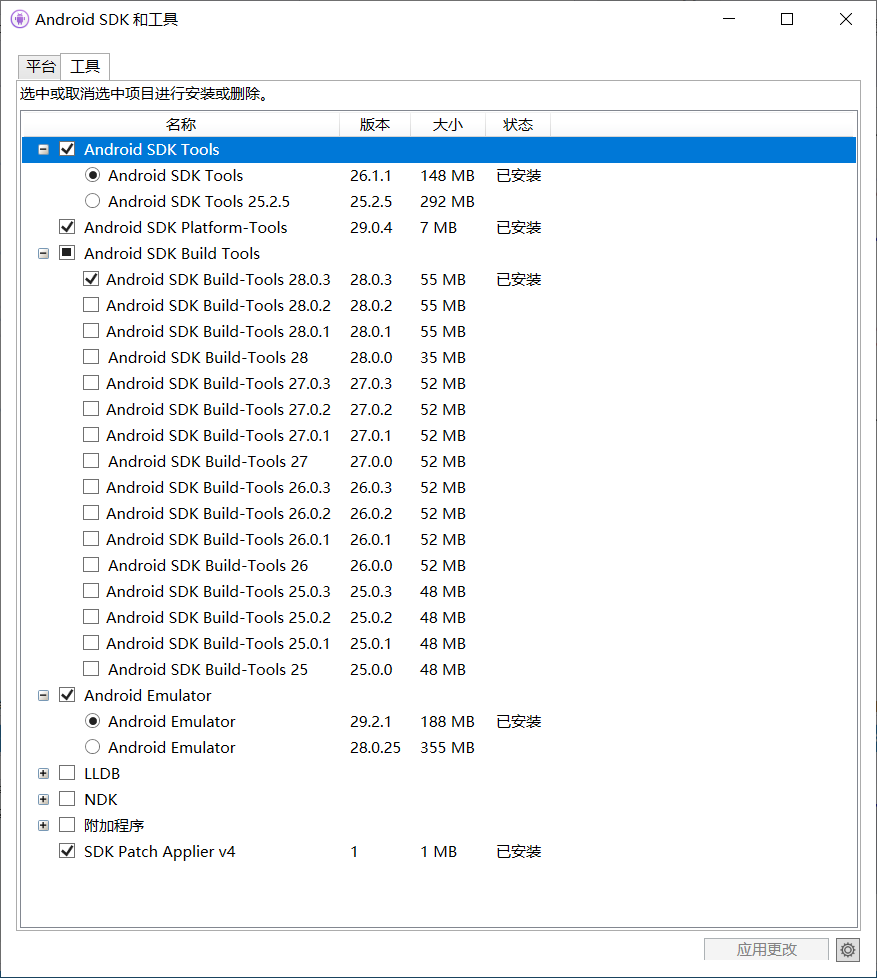
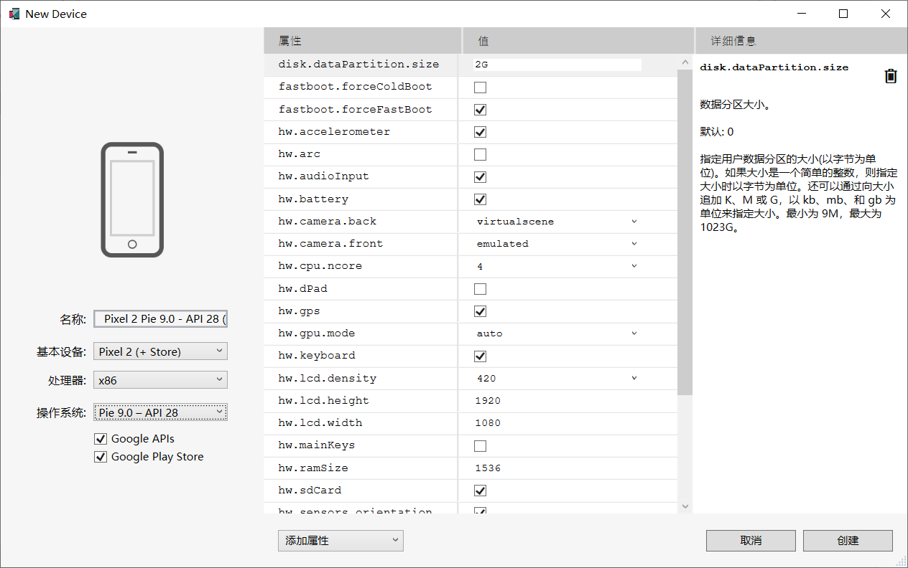
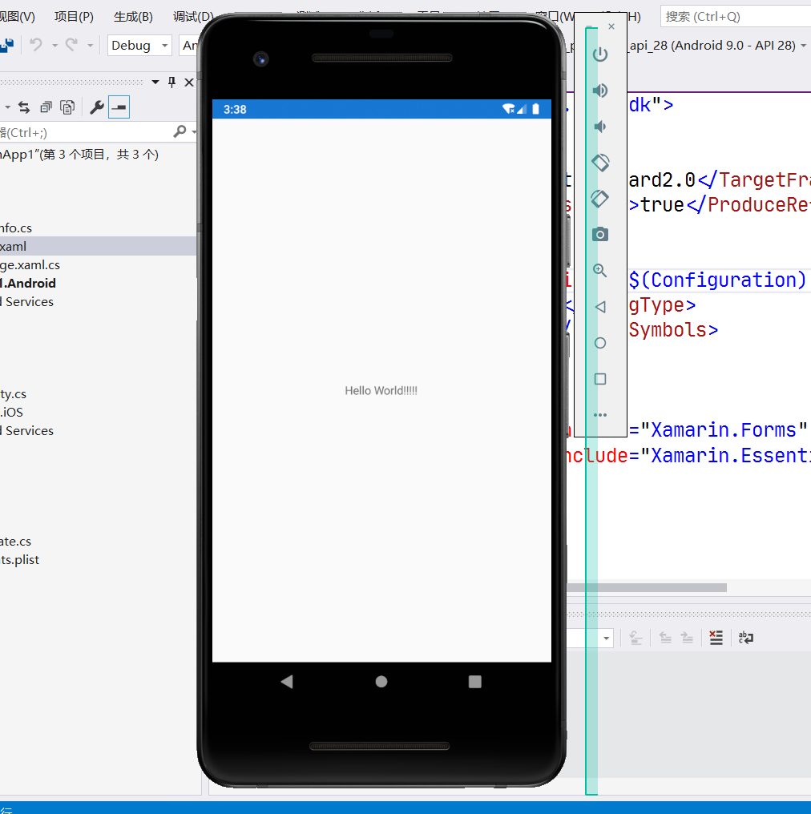

主要介绍了 Xamarin 中 Xamarin.forms , Xamarin.Android, Xamarin.iOS 的区别和联系，并且搭建环境和创建第一个 Xamarin.forms 应用并运行调试。
Xamarin
Xamarin是Mono开源项目的一个分支，把Mono里移动开发这一块专门拿出来做成了一个商业项目。（原先是收费的商业项目，到了2016年微软把Xamarin公司收购了，才变成开源的了。）
现在Xamarin是一个开源平台，用于通过 .NET 构建适用于 IOS，Android 和 Windows 的新式应用程序。是一个抽象层，可用于管理共享代码与基础平台代码的通信。使开发人员能够跨平台共享应用程序，允许开发人员以一种语言编写所有的业务逻辑，但是在每个平台上各自实现外观等。
说白了就是共享底层逻辑的 C# 的代码，并且创建各自的UI, 使得一个工程开发能够多个平台使用。

然后就是 Xamarin 的结构：

Xamarin.Android
Xamarin.Android 是将 C# 编译为中间语言，然后在程序运行的时候，通过即时编译（JIT）编译成本机程序集（类似于java虚拟机的那种）。
Xamarin.iOS
Xamarin.iOS 是将应用程序完全编译成本机的ARM程序集代码（完全的静态编译）。
Xamarin.Android 和 Xamarin.iOS 其实就是两个单独的工程，前者是专门对于Android开发的，后者是专门对于iOS开发的工程。但是Xamarin不是跨平台的吗？ 这个时候就用到了 Xamarin.Forms 了！
Xamarin.Forms
Xamarin.Forms 是一个开源的 UI 框架，允许开发者写一种UI布局与设计，然后根据不同的平台渲染成不同的UI控件(实现了跨平台的UI开发)

上图中的 Xamarin.Forms Platform Renderer 就是做这种事情的。
就像官网文档说的：
Who Xamarin.Forms is for
Xamarin.Forms is for developers with the following goals:
- Share UI layout and design across platforms.
- Share code, test and business logic across platforms.
- Write cross-platform apps in C# with Visual Studio.
UI的开发可以是原生开发，也可以是用Xamarin.Forms开发，原生开发就是使用Android和iOS原生的UI控件。基于Xamarin.Forms的UI开发可以使代码共享程度进一步提高：

从上图可以看到，左边的原生UI开发，代码共享程度是75%左右，也就是说只是共享了后台的逻辑代码了，前端的UI还是要各自做各自的。右边的Xamarin.Forms开发的项目，代码共享程度到了95%，这就几乎没有多少平台相关的代码了。
以上的关系总结
Xamarin.Android 和 Xamarin.iOS (其实还有Xamarin.Mac , Xamarin.UWP，Xamarin.tvOS 等) 这些都是Xamarin里的具体的工程， 专门对应于具体的平台里的，可以单独开发。
而Xamarin.Forms 是用于跨平台的，可以实现同时开发Android和iOS和UWP 等，将一个共享的UI框架分别渲染到具体的平台工程里去，实现大部分的UI和逻辑代码共享。
比如在VS2019 里面创建一个Xamarin项目的时候，可以看到非常多的选项：
第一个Xamarin.Forms 就是一个跨平台的方案，当在Xamarin forms创建的时候勾选这Android和iOS的时候(因为没有装UWP的开发环境，所以只选了这两个)，项目的结构就会如下：

也就是说， Xamarin.Forms 包含了其他的工程，而像 Xamarin.Android 这种既可以是独立开发的工程，也可以当做Xamarin.Forms 里的一部分通过Xamarin.Forms 一起开发。
所以说清楚了这些之后，官网上的那些文档也就不觉得混乱了， 想学哪一块就可以针对性地学习了。
环境搭建
操作系统 ： win10
IDE： visual Studio 2019 （刚下载的）
如果只需要Android和iOS开发的话，只要在vs installer 上选择移动开发的负载下载即可

安卓需要java SDK 8， Android SDK 和安卓模拟器 这三个东西vs都给自动装好了.
其中jdk8自动被安装才了“C:\Program Files\Android\jdk\microsoft_dist_openjdk_1.8.0.25”.
Android SDK 装在了 “C:\Program Files (x86)\Android\android-sdk” （当然，可以自己设置）
然后安卓的模拟器就是自动保存在了自己用户文件夹下的 “.Android” 里面（这个需要自己安装设备，具体在下文）
安卓模拟器有硬件加速，运行之前需要在 “控制面板”-> “程序与功能” -> 左栏 “启用或关闭windows功能” -> “windows虚拟机程序监控平台” 勾选上， 否则每次运行之前都会有一个警告。
第一个 Xamarin.Forms 工程
打开vs， 新建项目，在框里搜索 Xamarin， 点击选中 Xamarin.forms, 然后设置项目名称，目录等， 然后点创建。 之后选择空白的模版， 平台勾选Android和iOS （有环境的也可以勾选UWP试试），然后就创建完成。
项目结构：
其中XamarinApp1.Android 就是对应的生成安卓的工程， XamarinApp1.iOS 就是对应的iOS的工程。
在MainPage.xaml 中编辑，把 “Welcome …” 换成 “hello World” （程序猿开发第一步嘛），然后就是运行了。
Xamarin.Android 的运行调试
运行安卓之前需要安装安卓的模拟器，VS的安卓工具里有两个挺重要的工具：Android SDK管理器和 Android 设备管理器。
点击工具 -> Android -> Android SDK 管理器
我这上面是下载的默认的 安卓SDK9; 设置的图片：


Android SDK 有了之后，就安装对应的设备就行了。点击 工具 -> Android -> Android Device Manager
点击新建（新建一个安卓虚拟设备） 操作系统要选择已经装好的sdk对应的版本， 处理器选择 x86（官网说x86比x86_64实际会快，而且可以硬件加速） ，其他可以不用多设置（以后可以再改嘛，先能运行再说）， 点击创建即可。

创建完成后，在上面的工具栏里，选择需要运行的Android和对应的设备，点击运行，即可完成
运行截图：

到此第一步完成，Android上部署成功！
Xamarin.iOS 运行调试
Xamarin.iOS 调试需要iOS真机， 如果是模拟器也需要MAC系统才行（贫穷限制了开发人员的学习）。
找了一圈，发现了一个方案： windows装 MAC虚拟机，然后再MAC上装模拟器和VS，详情
可以实现但是太麻烦，就不瞎折腾了。
这个跨平台是挺棒，但是不代表着学习了Xamarin就会了Android和iOS的开发， 每个平台的特性都需要了解的。iOS 系统的很多特性都不了解是写不出来高质量的程序的，甚至还得要求开发者掌握一些 Object-C 的语法 。所以说没有接触使用过iOS的我果断放弃啦..
所以对于我个人来说，往后的学习可能只是限制在Xamarin.Android， 而不是上面的跨平台特性（没有其他平台的需求）。 如果只学习 Android开发，用java入门更好，但是多学点新的东西不也很刺激么hh
以上仅仅是我个人的理解，不一定是完全正确的！！
如果有错误请评论指出，谢谢！